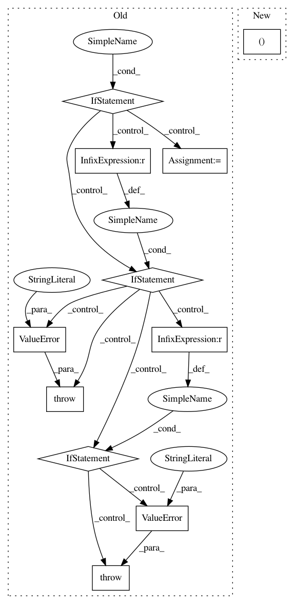

87a746878ba2359a7fb8135ed5829e6c5003b4db,keras/backend/cntk_backend.py,,separable_conv1d,#Any#Any#Any#Any#Any#Any#Any#,1715
Before Change
pointwise_kernel = _preprocess_conv2d_kernel(pointwise_kernel, data_format)
padding = _preprocess_border_mode(padding)
if dilation_rate == (1, 1):
x = C.convolution(depthwise_kernel, x,
strides=strides,
auto_padding=[False, padding, padding],
groups=x.shape[0])
x = C.convolution(pointwise_kernel, x,
strides=(1, 1, 1),
auto_padding=[False])
else:
if dilation_rate[0] != dilation_rate[1]:
raise ValueError("CNTK Backend: non-square dilation_rate is "
"not supported.")
if strides != (1, 1):
raise ValueError("Invalid strides for dilated convolution")
x = C.convolution(depthwise_kernel, x,
strides=strides,
auto_padding=[False, padding, padding],
groups=x.shape[0])
x = C.convolution(pointwise_kernel, x,
strides=(1, 1, 1),
auto_padding=[False])
x = _postprocess_conv2d_output(x, data_format)
return squeeze(x, spatial_start_dim)
After Change
raise ValueError(
"Dilated separable 1D convolution is currently not supported "
"by CNTK backend. Please set `dilation_rate` to 1. "
"You passed: %s" % (dilation_rate,))
if data_format == "channels_last":
spatial_start_dim = 2
In pattern: SUPERPATTERN
Frequency: 3
Non-data size: 11
Instances
Project Name: keras-team/keras
Commit Name: 87a746878ba2359a7fb8135ed5829e6c5003b4db
Time: 2019-01-09
Author: me@taehoonlee.com
File Name: keras/backend/cntk_backend.py
Class Name:
Method Name: separable_conv1d
Project Name: asyml/texar
Commit Name: 54fed17211d0b077579fba58e93075aee9312668
Time: 2019-04-05
Author: zhitinghu@gmail.com
File Name: texar/modules/decoders/rnn_decoder_base.py
Class Name: RNNDecoderBase
Method Name: __init__
Project Name: asyml/texar
Commit Name: 54fed17211d0b077579fba58e93075aee9312668
Time: 2019-04-05
Author: zhitinghu@gmail.com
File Name: texar/modules/decoders/transformer_decoders.py
Class Name: TransformerDecoder
Method Name: __init__